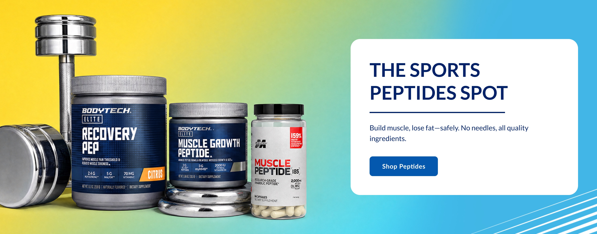
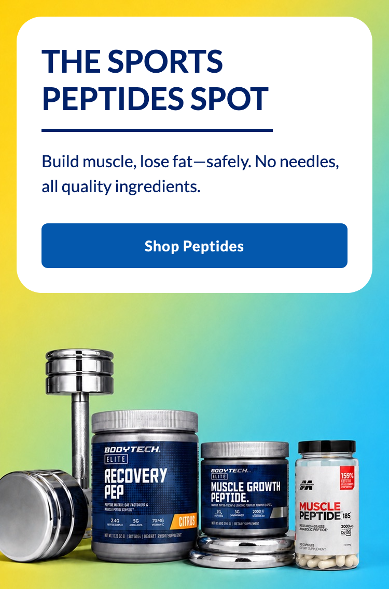
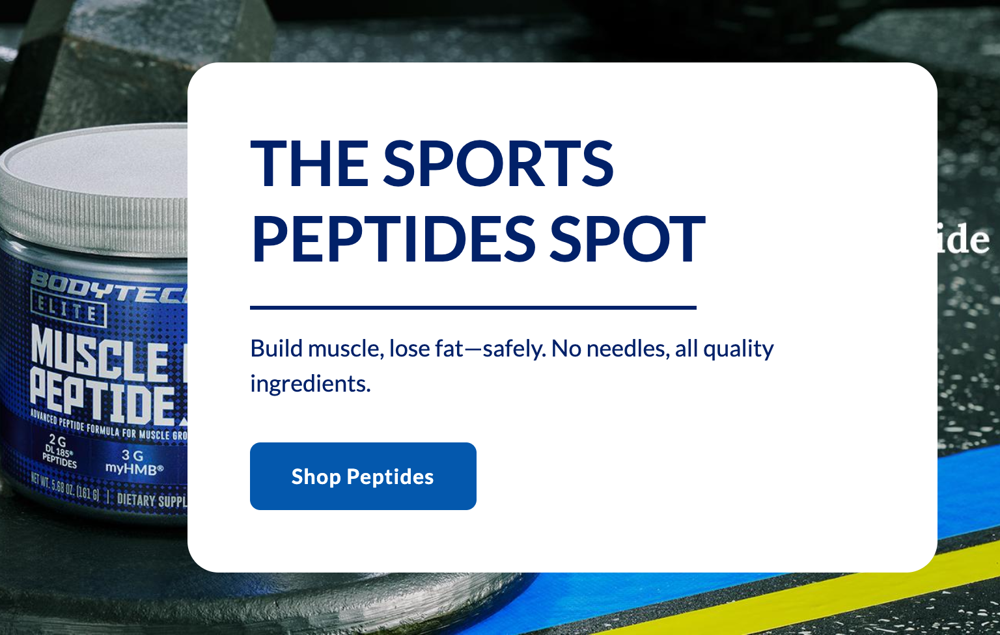
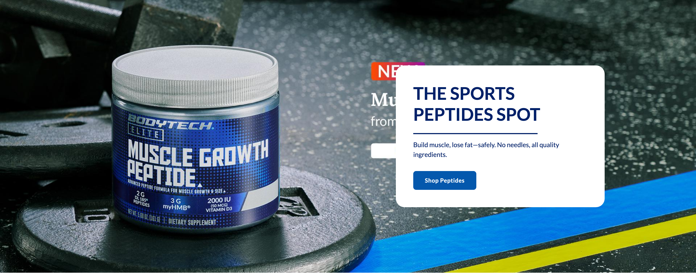

Platter component
Slim Hero Banner A
Transcribed from Confluence, authored by Nigel Bagley. The source page covers variants A and B; this file is the spec for A. It is the client's spec, reproduced verbatim in substance. Where our implementation deviates it is recorded under Deviations, not by editing the spec.
Spec: https://vitaminshoppe.atlassian.net/wiki/spaces/Platter/pages/4964319234/FSD+Slim+Hero+Banner+A+B
02 — Screenshots
How it renders
Wipe the handle across the design to find where the build drifts from it. The Figma frame and the capture are exported at the same width, so anything that moves under the handle is a real difference. Every width is below as a plain capture.




03 — Fields
What a merchandiser fills in
Generated from _schema.ts, in the order Amplience shows them.
| Field | Type | Constraints | Description | |
|---|---|---|---|---|
eyebrowEyebrow heading |
string | max 24 | A short label above the headline, for a campaign or category name. Displays in uppercase automatically. Keep it to two or three words — it is capped at 24 characters and does not wrap. Formatting: **bold**, _italic_, and ~12~ for subscript. A registered mark (®) is raised automatically, and a plain asterisk is never formatting. Leave empty to hide it. | |
headingHeading |
string | required | max 90 min 1 |
The main headline. Displays in uppercase automatically, so type it in normal sentence case. Wrap words in _underscores_ for italic — the headline is already bold, so **bold** changes nothing you can see. Write ~12~ for subscript, and a registered mark (®) is raised automatically; a plain asterisk is never formatting. Around 4 words per line reads best; long headings wrap to 3+ lines on mobile and push the button down. |
headingLevelHeading level |
string | h1 · h2 · h3default "h2" |
Choose h1 only if this banner is the first thing on the page and no other h1 exists. Otherwise leave it as h2 — two h1s on one page hurts SEO. Choose h3 when the banner sits underneath a section that already has an h2, so the page's heading order stays unbroken. This changes nothing you can see: the size is set separately below. | |
headingSizeHeading size (desktop / mobile) |
string | 64px / 38px · 56px / 34px · 48px / 30px · 36px / 24px · 28px / 20px · 20px / 16pxdefault "48px / 30px" |
A fixed pair from the TVS type scale — the first size applies from tablet up, the second on phones. 48px / 30px is the design default. The two largest are for short promo lines only: a long headline at 64px fills the card and pushes the button down. 20px / 16px is the same size as the description text, so the headline stops standing out — use it only when a long headline has to fit. | |
headingFontHeading font |
string | Lato · corisanderegular · Fieldsdefault "Lato" |
Lato is the default and matches the design. Corisande is the site's body typeface — pick it when the banner needs to sit closer to surrounding editorial copy. Fields is the serif used in the newer designs; it is not yet installed on vitaminshoppe.com, so headings set in Fields fall back to Georgia. This affects the eyebrow and headline only; the description and button always stay Lato. | |
showDividerShow divider |
boolean | default true |
The short navy line under the heading. Switch it off and the spacing closes up cleanly. | |
bodyDescription |
string | max 220 | One or two sentences supporting the headline. Wraps rather than truncating. Formatting: **bold**, _italic_, and ~12~ for subscript. A registered mark (®) is raised automatically, and a plain asterisk is never formatting, so a footnote marker like 20%* is safe. Leave empty to hide it. | |
ctaLabelButton label |
string | max 30 | The call to action. The button only renders when both a label and a link are set. Formatting: **bold**, _italic_, and ~12~ for subscript. A registered mark (®) is raised automatically, and a plain asterisk is never formatting. | |
ctaUrlButton link |
string | max 500 | Where the button goes. Use a relative path for vitaminshoppe.com destinations. | |
ctaStyleButton colour |
string | dark · light · outlinedefault "dark" |
Dark is #0458AD with white text and is the right choice almost every time, because the button sits on a white card. Light is white with #0458AD text and a thin #0458AD outline — it needs a dark surface behind it to be visible, so on the white card it reads as a weaker second choice rather than the main action. Outline is transparent with a black edge and black text, which also reads on the white card and is quieter still. | |
backgroundImageBackground image (desktop) |
string | required | min 1 | Full URL of the image, cropped to 28:11 before upload. jpg, jpeg or png. Product shots and decorative detail belong here — never text, which must stay real HTML so search and AI crawlers can read it. |
backgroundImageAltImage alt text (desktop) |
string | required | min 1 | Describe what the image shows. Required for accessibility. Also used for the mobile crop unless you give that its own alt text below. |
backgroundImageMobileBackground image (mobile) |
string | max 500 | Full URL of the taller phone crop, 375:567. Falls back to the desktop image when empty, which will crop badly — supply it. | |
backgroundImageAltMobileImage alt text (mobile) |
string | max 300 | Only needed when the phone crop shows something different — a taller, tighter crop often cuts out products the desktop alt text lists. Leave empty to reuse the desktop alt text, which is also what happens if no mobile image is set. | |
priorityPrioritise image loading |
boolean | default false |
Switch on when this banner is the first thing on the page, so the image loads immediately instead of lazily. | |
sectionIdSection ID |
string | max 50^[a-z][a-z0-9-]*$ |
A name for this specific banner, used for two things. A link anywhere on the site can jump straight to it by ending the URL with # and this name, e.g. #spring-sale. Page-level CSS can also target this one banner rather than every banner of this type. Use lowercase letters, numbers and hyphens, start with a letter, and make it unique on the page — two modules sharing an ID will break the jump link. Leave empty if you need neither. |
04 — Sample content
A filled-in example
From _content.json. This is what the screenshots above are rendering.
{
"eyebrow": "",
"heading": "The sports peptides spot",
"headingLevel": "h1",
"headingSize": "48px / 30px",
"headingFont": "Lato",
"showDivider": true,
"body": "Build muscle, lose fat—safely. No needles, all quality ingredients.",
"ctaLabel": "Shop Peptides",
"ctaUrl": "#bodytech-elite",
"ctaStyle": "dark",
"backgroundImage": "../assets/hero-a-desktop-2160.jpg",
"backgroundImageAlt": "BodyTech Recovery Pep, Muscle Growth Peptide and MuscleTech Muscle Peptide tubs beside a dumbbell, on a yellow to cyan gradient",
"backgroundImageMobile": "../assets/hero-a-mobile-750.jpg",
"backgroundImageAltMobile": "BodyTech Recovery Pep and Muscle Growth Peptide tubs beside a dumbbell, on a yellow to cyan gradient",
"priority": true,
"sectionId": "peptides-hero"
}05 — Design reference
Design reference
| Type | Desktop | Mobile |
|---|---|---|
| A | Figma 18099:198812 — 1512 × 594 (28:11) | Figma 18099:193540 — 375 × 567 |
| B | Figma 15917:130804 — 1512 × 425 (32:9) | 375 × 430 |
06 — User requirement
User requirement
- User can click the CTA to navigate to the linked destination.
07 — Admin requirement
Admin requirement
Create A + B as two separate section based on the design. Heading size and Module height is different between A and B.
| Content type | Functional requirement | Asset / copy requirement | Responsive & content behavior |
|---|---|---|---|
| Eyebrow Heading (Optional) | Admin can input an optional text above heading. | 24 character limit | |
| Heading (Required) | Admin can input a headline. Admin can change the font family by selecting alternate font from dropdown. (List TBD) | Card expands vertically to accommodate extra line rather than truncating or shrinking font size. | |
| Divider (Optional) | Admin can toggle a horizontal divider rule beneath the headline. | – | If toggled off, spacing collapses cleanly rather than leaving a visible gap. |
| Description (Optional) | Admin can input subcopy supporting the headline. | Wraps rather than truncates if it exceeds the limit. | |
| Button (Optional) | Admin can input a single primary CTA label and destination URL. Admin can change the button color (Dark vs Light) | Dark: #0458AD with white text. Light: white with #0458AD text. | |
| Background (Required) | Admin can upload a featured/background image, with separate crops for desktop and mobile breakpoints. Admin can upload alt text for each image. Admin can select performance setting enable, so that image is loaded properly when used as first module on the page. | Aspect ratio — (A) Desktop 28:11 / Mobile 375:567. (B) Desktop 32:9 / Mobile 375:430. Supported formats: jpg, jpeg, png. | Below the tablet breakpoint layout follows mobile layout. |
08 — Other requirements
Other requirements
- Follows FSD: Global SEO Rule.
- Analytics: component supports automated impression tracking (viewport entry) and click tracking via the standard
raiseEventhandler.
09 — Open comments
Open comments
Sebastian Georgescu — unanswered 2026-08-04
unanswered 2026-08-04
Please confirm whether an admin can change the headline font size. In the screenshots, the promo version (BOGO 50) uses a larger font than the non-promo version. We must be able to execute both versions.
10 — Deviations
Deviations
Recorded so the gaps are visible rather than forgotten.
Eyebrow heading, 24 chars
Built optional, maxLength: 24, uppercase, brand blue
Absent from both current Figma frames (18099:198812, 18099:193540); it was present in the earlier 15755:2502 frame. Built to the spec rather than the frames, since the spec is the contract. The type scale is ours, not Figma's — 16px desktop / 14px mobile at 0.08em, a step under the smallest headline pair so it reads as a label. Needs a design call if TVS has a specific treatment in mind.
Font-family dropdown
Built ["Lato", "corisanderegular"]
Resolves the spec's "List TBD" by observation rather than assumption: those are the only two text typefaces @font-face-declared and in use on the live vitaminshoppe.com (Lato for headings, corisanderegular for body). Chirag's 2026-07-29 email lists four values, but corisandelight and corisandebold are weight variants of the same family, not separate choices — per the 2026-08-05 decision the dropdown offers two. Corisande ships one weight per family name, so a bold heading resolves to corisandebold; setting corisanderegular at weight 700 would give a browser-faked bold instead of the real face. Applies to the eyebrow and headline only.
Headline font size
Built 6 fixed desktop/mobile pairs
Answers Sebastian's comment: promo and non-promo versions are both executable. Four pairs are the richtext-md tokens from Figma 9905:43543 (h1 48/30 default, h2 36/24, h3 28/20, h4 20/16); 64/38 and 56/34 are extrapolated above h1, since the scale documents nothing larger. Pairs are fixed rather than two free selectors, so the breakpoints cannot be set incoherently. Line-height stays 1.2 and letter-spacing 0 at every size — the banner's own style is richtext-md/H1/bold lato, and only the size is merchandiser-selectable.
Tablet type step (9905:43543 documents 1200–768 separately)
Not built two breakpoints only
Agreed scope: desktop and mobile only. Consequence, recorded so it is not a surprise — between 768px and 1200px the heading renders the desktop size, so the default pair shows 48px where Figma documents 32px. Honouring it needs a third value per pair and an lg: step.
Button row transcribed loosely
Corrected 2026-08-05
Our copy said "Primary vs Secondary" and carried a sentence the source does not: "Admin can override Primary / Secondary button color + text color from page level." Both entered at the first commit (31eb90f) and were never edited afterwards, so this is either a loose original transcription or a Confluence edit made after we pulled the page — worth confirming with Nigel. The Button row in Admin requirement is now the source wording. The page-level override is still built, but on the client's direct instruction, not on this FSD row; do not cite the spec for it.
Light button needs an edge the FSD does not mention
Built 2px border in the button's own text colour
The FSD's Light is a white fill with #0458AD text and nothing else. That is correct on a dark surface, but this section puts the CTA inside a white card, where a white fill has a 1.00:1 boundary against its background — WCAG 1.4.11 asks 3:1, and rendered it stops reading as a button at all. Taking the border from the existing text colour introduces no new colour, keeps both FSD values verbatim, and lifts the boundary to 6.99:1. On a dark surface the rim against a white fill is barely perceptible. Figma's own Light equivalent fills #F2F2F2 rather than white; the FSD wins as the contract.
Page-level button colour override
Built CSS variables, at three scopes
Built on the client's direct request (see the Button row transcribed loosely deviation above — it is not in the source FSD). The button is a shared component class (components/button.css) whose colours are read from custom properties that are declared nowhere and only ever read with the Figma value as a fallback. Any ancestor rule therefore wins by inheritance, which gives three scopes from one mechanism: .tvs-platter { … } for every Platter button on the page, .tvs-platter-cms-component-slim-hero-banner-a { … } for every instance of this section, and #<Section ID> { … } for one specific placement. Two layers of token: --plx-color--brand-blue rebrands everything using TVS blue, --plx-button--background / --plx-button--color retarget only buttons. Hover is derived from whatever background it is given (color-mix in OKLab), so overriding one value does not leave a stale hover behind. Verified in Chrome at all three scopes.
Button hover / disabled / focus states
Built hover and disabled from Figma 7078:62, focus is ours
Figma's hover colours are not a single formula, which is why the derived hover is only used for the two FILLED palettes: #0458AD→#012169 is a 63% mix toward black but #F2F2F2→#D9D9D6 is 92%, outline-light lightens (#000→#232323), and both link hovers change hue outright (→#EE2737, →#9CDBD9). Outline and link hovers are therefore fixed tokens and land on Figma exactly; the filled default lands on #012B5B against Figma's #012169 (dE 0.038 — both dark navy), the deliberate cost of hover following an override automatically. Focus-visible is not in Figma and was added because accessibility is a delivery requirement.
Section ID (jump-link + CSS target)
Built optional field, not in the spec
An addition, recorded because the spec does not ask for it. Puts a merchant-chosen id on the section root, which serves two jobs at once: a link ending #spring-sale jumps to this banner, and page-level CSS can target this one placement rather than every banner of this type. Constrained to lowercase letters, numbers and hyphens so it is always a valid fragment. Needed for in-page link targeting in a later phase.
Alt text per image
Built optional imageAltMobile, falling back to imageAlt
<picture> has a single <img> and therefore a single alt, so the crop on screen is tracked in JS and the alt swapped reactively. Two <img> elements would have satisfied the letter of the spec at the cost of a double fetch on an LCP image, which is why this was originally left unbuilt. The media query is read off the <source> element so the breakpoint is not duplicated. Falls back to the desktop alt whenever the mobile field is empty or no mobile crop was uploaded — in the latter case the desktop image is what phones are actually served.
Analytics — click
Built raiseEvent('ItemClick', item, 'Slim Hero Banner A') on the CTA
Not in the TVS-Common reference; the shape is copied from TVS's own components, where raiseEvent is a page-level global called by bare identifier (CMSHomepagestripUpdated, CMSShowcaseComponentCta, CMSLeadStoryGrid, CMSVideoTakeover). Four of them pass (event, item); CMSSuperPLPBrandBanner passes a component name third, which is what we do. Guarded by typeof so a page without the handler cannot swallow the navigation. Unverified against a real LP — the payload keys we send (ctaLabel, destinationUrl, moduleTitle) are our guess at what their handler reads.
moduleTitle is deliberately generic: it carries whatever names the instance — the heading here, the expert's name in the Expert Module — so one key identifies the placement across every section rather than each module inventing its own.
Analytics — impression (viewport entry)
Not built
No impression event name appears anywhere in the ten downloaded TVS templates — only ItemClick and the ATC event. Building one means inventing an event name TVS's handler would ignore. Needs the name and payload from TVS.
Structured data per module
Not built
Required by FSD/globals.md; deferred by agreement.
Font-family dropdown gains a third value, and the stacks move to base.css
Built 2026-08-07, supersedes the two-value list above
Fields joins Lato and corisanderegular in the shared headingFont enum. It is the serif the newer TVS designs are drawn in — Shop By Goal, Benefits Highlight and Testimonials are all set in it — and it is not hosted by vitaminshoppe.com, appearing in no @font-face rule on the live site. Georgia carries it until TVS supplies the file, at which point adding the @font-face is the only change needed and every content item already set to Fields switches over on its own. Open with the client on the sections that default to it.
Nothing about this banner changes: it is drawn in Lato, default is still Lato, and the rendered stack is byte-identical to what it was.
What did change here is how the choice is resolved. Each section was restating the mapping in its own template — this one carried headingFont === 'corisanderegular' ? 'corisandebold' : null — which put the non-obvious rule (Corisande ships one weight per family name, so bold is a different family rather than a weight) in as many places as there are sections, about to be six. The three stacks are now declared once on .tvs-platter in base.css and every section reads the same lookup:
'--plx-font-family--heading': $data.headingFont ? 'var(--plx-font-family--' + $data.headingFont.toLowerCase() + ')' : null
An omitted key resolves to null, so the markup carries no default at all. The designed face belongs to the section rather than to its markup, so a section not drawn in Lato declares --_heading-font on its BEM base in base.css — which is what keeps this one line byte-identical across every section that has a heading field.